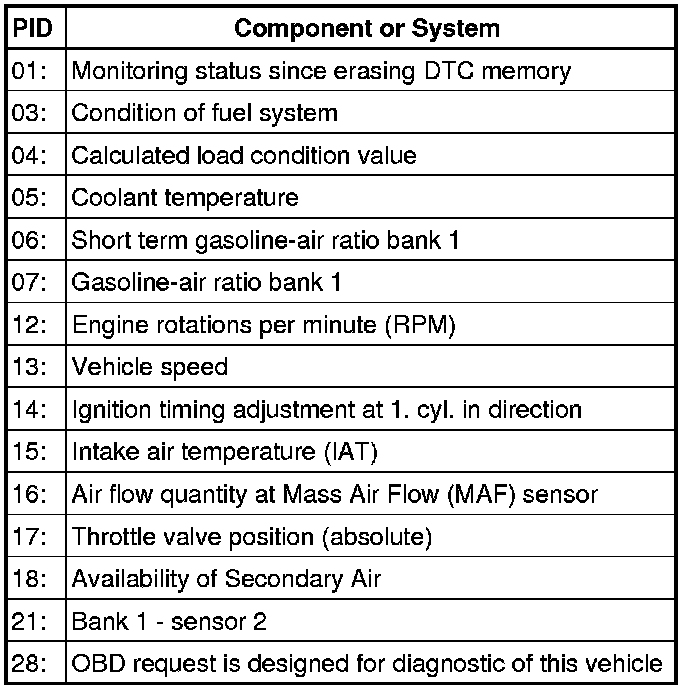

Diagnostic Mode 01 - Read Current System Data
Diagnostic Modes 01 - 09
The information provided in Modes 01 through 09 displays the various levels of emission related data that may be monitored, as well as the ability to retrieve and read stored DTC trouble codes , erase stored DTC trouble codes, generate readiness codes, and select the various PIDs and Test-IDs used within the modes to monitor the engine, and emission related component parameters.
• Depending on scan tool and protocol used, the information displayed may be referred to by different names such as Test-ID (TID), Hex-ID, Component-ID (CID), On-Board Diagnostic Monitor Identifier (OBDMID), or contain no name at all and be referenced by only a number.
Diagnostic Mode 01 - Read Current System Data
Diagnostic Mode 01 makes it possible to access current emissions-related measured values and diagnostic data. The original measured values (no replacement values), input and output data and system status information are displayed using Diagnostic Mode 1.
Depending on scan tool and protocol used, the information displayed in diagnostic mode 01 may be referred to by different names such as Test-ID (TID), Hex-ID, Component-ID (CID), On-Board Diagnostic Monitor Identifier (OBDMID), or contain no name at all and be referenced by only a number.
Test requirement
• Coolant temperature at least 80° C.
Procedure
- Connect the scan tool.
- Start the engine and run at idle.
- Select "Diagnostic Mode 1: Obtain data.".
- From the following table, select the desired the "PID" that is to be monitored, e.g. "PID 05-Coolant temperature".
The current values of the component or system that is being monitored will be displayed on the scan tool screen.

- Switch the ignition off.